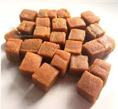

|  |
|
May Periods are a nightmare for most women; however, asafoetida may come to your rescue by alleviating the menstrual pain and cramps in the lower abdomen and back. Being a natural blood thinner, it helps blood flow smoothly without hampering any part of your body. It also boosts progesterone secretion that promotes easy blood flow, thus providing relief from pain. Mix a pinch of asafoetida, fenugreek powder and a pinch of salt in a cup of buttermilk and consume it during periods.(Also Read: Here's Why You Shouldn't Consume Cold Foods And Drinks While You Are On Your Periods )
Asafoetida has anti-inflammatory properties that reduce inflammation of the blood vessels in the head, which in turn reduces headaches. All you need to do is to heat a pinch of asafoetida in some water. Drink this solution a couple of times in a day to see effective results.
Asafoetida acts as a natural antidote for insect bites and stings. All you need to do is to mix garlic and hing paste and apply on the affected area. Its anti-inflammatory properties work together to reduce acne production.
Asafoetida helps increase the supply of oxygen to facial tissues that gives your skin a radiant glow. Mix asafoetida with water or rose water to form a paste; you can add some sandalwood powder too. Apply this on your face regularly to get effective results.
Asafoetida can do wonders for dry and frizzy hair; thanks to its moisturising properties. Make a hair mask using yogurt, almond oil and hing and apply on your hair. Leave it for an hour before washing it off with lukewarm water.(Also Read: Banana Hair Mask: Here's How You Can Use This Wonder Fruit For Lustrous Hair )
Please click the below link for contact and order
Contact